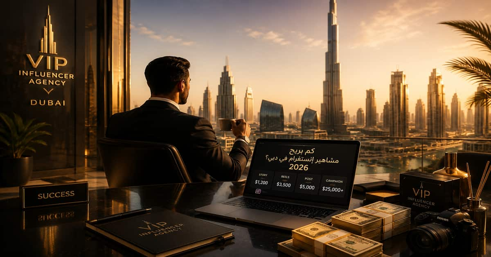

سؤال “كم يربح مشاهير إنستاغرام في دبي 2026؟” لم يعد سؤال فضول فقط.

أصبح سؤالًا مهمًا لكل براند يريد إطلاق حملة، ولكل مؤثر يريد تسعير محتواه، ولكل شخص يحاول فهم اقتصاد الشهرة في واحدة من أكثر المدن تأثيرًا على السوشال ميديا.
في دبي، المؤثر لا يبيع منشورًا فقط… بل يبيع انتباهًا، ثقة، صورة اجتماعية، وأحيانًا حلمًا كاملًا.
لهذا لا توجد إجابة واحدة ثابتة.
مشهور لديه 100 ألف متابع قد يربح أكثر من شخص لديه مليون متابع، إذا كان جمهوره أكثر ثقة وتفاعلًا وقدرة على الشراء.
ومؤثر في العقارات أو التجميل أو السيارات الفاخرة قد يتقاضى أكثر من مؤثر ترفيهي، لأن قيمة العميل المحتمل أعلى بكثير.
كم يربح مشاهير إنستاغرام في دبي حسب عدد المتابعين؟
أفضل طريقة لفهم أرباح مشاهير إنستاغرام في دبي هي تقسيم المؤثرين حسب حجم الحساب، ثم النظر إلى نوع المحتوى: ستوري، منشور، ريلز، أو حملة كاملة.
| نوع المؤثر | عدد المتابعين | ربح الإعلان الواحد تقريبًا | مناسب لأي نوع حملة؟ |
|---|---|---|---|
| Nano Influencer | 1,000 - 10,000 | 500 - 2,500 درهم | مطاعم محلية، كافيهات، افتتاحات، منتجات بسيطة |
| Micro Influencer | 10,000 - 50,000 | 2,500 - 7,500 درهم | براندات ناشئة، عيادات، متاجر إلكترونية، تجارب محلية |
| Mid-Tier Influencer | 50,000 - 500,000 | 7,500 - 30,000 درهم | حملات قوية، مطاعم فاخرة، فنادق، منتجات تجميل |
| Macro Influencer | 500,000 - 1,000,000 | 30,000 - 75,000 درهم | إطلاق براند، عقارات، سيارات، حملات كبيرة |
| Mega / Celebrity Influencer | أكثر من مليون | 75,000 - 150,000+ درهم | حملات وطنية، فاخرة، عقارية، سياحية، أو تجارية ضخمة |
هذه الأرقام ليست قانونًا ثابتًا، لكنها تعكس نطاقات واقعية يمكن استخدامها كبداية عند دراسة أسعار المؤثرين في دبي.
إذا كنت تبحث عن أسعار إعلانات مشاهير وإنفلونسر الإمارات بشكل أكثر تفصيلًا، فاطلع على دليل أسعار إعلانات المشاهير والإنفلونسر في الإمارات 2026 الذي يوضح تكلفة إعلانات Instagram وTikTok وSnapchat وYouTube والعوامل التي تحدد سعر التعاون مع المؤثرين.
كم يربح مشهور إنستغرام من الستوري في دبي؟
الستوري هو الإعلان الأسرع والأكثر استخدامًا في دبي.
السبب بسيط: الستوري مباشر، سريع، ويشبه توصية شخصية أكثر من إعلان رسمي.
| حجم الحساب | سعر الستوري التقريبي | متى يكون مناسبًا؟ |
|---|---|---|
| حساب صغير | 300 - 1,500 درهم | زيارة مطعم، كود خصم، دعوة افتتاح |
| حساب متوسط | 1,500 - 7,000 درهم | تجربة منتج، عيادة، فندق، متجر إلكتروني |
| حساب كبير | 7,000 - 25,000 درهم | حملة قوية أو إطلاق منتج |
| مشهور كبير | 25,000 - 50,000+ درهم | براند فاخر أو حملة ضخمة |
الستوري لا يعيش طويلًا… لكنه قد يصنع قرارًا سريعًا إذا كان الجمهور يثق بالمؤثر.
كم يربح مشاهير إنستاغرام في دبي من الريلز؟
الريلز هو المحتوى الأكثر قوة في حملات إنستغرام داخل دبي، لأنه قابل للانتشار أكثر من المنشور العادي والستوري.
لذلك يكون سعر الريلز عادة أعلى.
| نوع المؤثر | سعر الريلز في دبي | سبب السعر |
|---|---|---|
| Nano | 1,000 - 3,000 درهم | تصوير بسيط وانتشار محدود |
| Micro | 3,000 - 10,000 درهم | جمهور متخصص وتفاعل جيد |
| Mid-Tier | 10,000 - 35,000 درهم | وصول أوسع وجودة إنتاج أعلى |
| Macro | 35,000 - 80,000 درهم | انتشار كبير وتأثير واضح على السوق |
| Celebrity | 80,000 - 200,000+ درهم | شهرة جماهيرية وصورة فاخرة قوية |
لماذا يدفع السوق في دبي أكثر من أسواق عربية كثيرة؟
دبي ليست سوقًا عاديًا.
المدينة نفسها تضيف قيمة للمحتوى.
عندما يظهر مؤثر داخل مطعم فاخر في دبي، أو فندق على البحر، أو برج سكني، أو عيادة تجميل، لا يرى الجمهور الإعلان فقط.
يرى صورة حياة.
وهذه الصورة ترفع قيمة الإعلان.
- القوة الشرائية في دبي مرتفعة.
- البراندات الفاخرة موجودة بكثافة.
- الجمهور متنوع عربيًا وخليجيًا وعالميًا.
- القطاعات المربحة مثل العقارات والتجميل والسياحة نشطة جدًا.
- المدينة نفسها تمنح المحتوى قيمة بصرية عالية.
إذا كنت تبحث عن الجهات المتخصصة التي تدير حملات المؤثرين بشكل احترافي داخل الإمارات، يمكنك الاطلاع على أفضل شركة تسويق عبر المؤثرين في دبي وأبوظبي والتعرف على كيفية اختيار الشريك المناسب للحملات الناجحة.
هل كل مشهور إنستغرام في دبي يربح مبالغ كبيرة؟
لا.
هذه واحدة من أكبر المغالطات.
ليس كل من لديه متابعون يربح.
بعض الحسابات الكبيرة لديها تفاعل ضعيف، وبعض الحسابات الصغيرة تحقق مبيعات قوية جدًا.
في دبي، الحساب الذي يبيع أفضل من الحساب الذي يلمع فقط.
المؤثر الذي يربح فعلًا هو الذي يملك ثلاثة أشياء:
- جمهور واضح.
- ثقة حقيقية.
- قدرة على دفع الناس للسؤال أو الحجز أو الشراء.
في السنوات الأخيرة، لم تعد فرص التعاون تعتمد فقط على الرسائل العشوائية أو العلاقات الشخصية. ظهرت منصات متخصصة تساعد الشركات على الوصول إلى المؤثرين المناسبين، وفي الوقت نفسه تمنح صناع المحتوى فرصة الظهور أمام العلامات التجارية الباحثة عن شركاء جدد.
فإذا كنت تمثل شركة أو براند وتبحث عن حسابات مناسبة لحملتك، يمكنك استخدام منصة البحث عن المؤثرين للعلامات التجارية للوصول إلى المؤثرين حسب الدولة والمجال والميزانية.
أما إذا كنت مؤثرًا أو صانع محتوى وتبحث عن فرص رعايات وتعاونات جديدة، فيمكنك التسجيل كمؤثر في منصة Viva Media Creative ليصبح حسابك متاحًا أمام الشركات التي تبحث عن مؤثرين مناسبين لحملاتها.
ما العوامل التي تحدد أرباح مشاهير إنستاغرام في دبي؟
لا يتم تسعير المؤثر في دبي بناءً على عدد المتابعين فقط.
هناك عوامل كثيرة قد ترفع السعر أو تخفضه.
1. عدد المتابعين
كلما زاد عدد المتابعين، ارتفع السعر غالبًا.
لكن هذا العامل وحده لا يكفي.
2. معدل التفاعل
حساب لديه 80 ألف متابع وتفاعل قوي قد يكون أفضل من حساب لديه 500 ألف متابع وتفاعل ضعيف.
3. نوع الجمهور
هل الجمهور من دبي؟
هل هو من الخليج؟
هل لديه قدرة شرائية؟
هل يهتم بالمنتج؟
4. القطاع
إعلان عقار فاخر ليس مثل إعلان كافيه صغير.
إعلان عيادة تجميل ليس مثل إعلان منتج بسيط.
5. نوع المحتوى
الستوري أرخص عادة من الريلز.
الريلز أغلى لأنه يحتاج فكرة وتصوير ومونتاج وقد يبقى ظاهرًا فترة أطول.
6. حقوق استخدام المحتوى
إذا أراد البراند استخدام فيديو المؤثر في الإعلانات الممولة، يرتفع السعر.
7. حصرية التعاون
إذا طلبت الشركة من المؤثر ألا يعلن لمنافسين لفترة معينة، يجب أن تدفع أكثر.
كم يربح المؤثر في دبي شهريًا؟
الدخل الشهري يختلف حسب عدد الحملات.
بعض المؤثرين يعملون على حملة واحدة شهريًا، وبعضهم ينشر إعلانات أسبوعية، وبعضهم يملك عقودًا طويلة مع براندات.
| نوع المؤثر | دخل شهري محتمل | ملاحظات |
|---|---|---|
| Nano | 1,000 - 8,000 درهم | غالبًا دخل جانبي وليس وظيفة كاملة |
| Micro | 5,000 - 25,000 درهم | قد يصبح دخلًا ثابتًا مع حملات متكررة |
| Mid-Tier | 20,000 - 100,000 درهم | يعتمد على قوة التفاعل والقطاع |
| Macro | 80,000 - 300,000 درهم | ممكن مع عقود شهرية وحملات كبيرة |
| Celebrity | 200,000 - 1,000,000+ درهم | للأسماء الكبيرة جدًا والحملات الفاخرة |
ما أكثر المجالات ربحًا لمشاهير إنستاغرام في دبي؟
ليست كل المجالات تدفع بنفس الطريقة.
في دبي، القطاعات المرتبطة بالفخامة والقرار المالي الكبير تدفع أكثر.
- العقارات الفاخرة.
- عيادات التجميل.
- السيارات الفاخرة.
- الفنادق والمنتجعات.
- المطاعم الراقية.
- الأزياء والمجوهرات.
- العطور.
- السياحة والتجارب الفاخرة.
- البراندات الشخصية والخدمات الاستشارية.
لماذا قد يدفع مطعم في دبي 10000 درهم لمؤثر؟
لأن المطعم لا يشتري فيديو فقط.
هو يشتري مشهدًا يجعل الناس ترغب في التجربة.
إذا كان المؤثر قويًا، يمكن لفيديو واحد أن يصنع:
- زيارات للمكان.
- حجوزات مباشرة.
- انتشار اسم المطعم.
- محتوى يعاد تداوله.
- صورة فاخرة في ذهن الجمهور.
في المطاعم، الإعلان الناجح لا يقول “الطعام لذيذ”… بل يجعل المشاهد يشعر أنه يريد أن يكون داخل الطاولة.
كم يربح مؤثر العقارات في دبي؟
مؤثر العقارات في دبي قد يكون من الأعلى دخلًا، لأن قيمة الصفقة العقارية عالية جدًا.
إعلان واحد لشقة فاخرة أو مشروع جديد قد يساوي عشرات الآلاف من الدراهم إذا كان المؤثر يملك جمهورًا من المستثمرين أو الباحثين عن السكن.
في بعض الحالات، قد يحصل المؤثر على:
- مبلغ ثابت مقابل الفيديو.
- عمولة على كل Lead مؤهل.
- عمولة على البيع.
- عقد شهري مع شركة عقارية.
الفرق بين المؤثر الذي يأخذ مبلغًا ثابتًا والمؤثر الذي يعمل بالعمولة
بعض مشاهير إنستغرام في دبي يفضلون مبلغًا ثابتًا.
وبعضهم يقبل نموذج العمولة إذا كان المنتج قويًا والبراند موثوقًا.
| النموذج | كيف يعمل؟ | مناسب لمن؟ |
|---|---|---|
| مبلغ ثابت | يدفع البراند مبلغًا محددًا مقابل المحتوى | الحملات الفاخرة والبراندات الكبيرة |
| عمولة | يحصل المؤثر على نسبة من المبيعات أو الحجوزات | المتاجر الإلكترونية والخدمات القابلة للقياس |
| مبلغ + عمولة | أجر أساسي مع مكافأة على الأداء | الحملات الذكية طويلة المدى |
| هدية فقط | منتج أو تجربة بدل الدفع | الحسابات الصغيرة أو العلاقات الجديدة |
هل المؤثر العربي في دبي يربح أكثر من المؤثر الأجنبي؟
لا توجد قاعدة ثابتة.
المؤثر العربي قد يكون أقوى إذا كانت الحملة تستهدف الجمهور الخليجي أو العربي.
والمؤثر الأجنبي قد يكون أفضل إذا كانت الحملة تستهدف المقيمين، السياح، أو الجمهور العالمي.
في دبي، اللغة والجمهور أهم من الجنسية.
ولفهم الصورة بشكل أوسع، لا يقتصر تأثير المؤثرين على دبي فقط، بل تضم الإمارات عشرات الأسماء البارزة التي صنعت جمهورًا عربيًا وعالميًا. ويمكنك التعرف على مشاهير السوشيال ميديا في الإمارات وأبرز الشخصيات التي تقود صناعة المحتوى والتأثير الرقمي في الدولة.
المؤثر المناسب ليس من لديه لغة جميلة فقط… بل من لديه جمهور يشبه العميل الذي تبحث عنه الشركة.
هل مشاهير إنستغرام في دبي يحتاجون تصريحًا للإعلانات؟
نعم، البيئة التنظيمية في الإمارات أصبحت أكثر جدية مع الإعلانات الرقمية وصناع المحتوى.
لهذا يجب على المؤثرين والبراندات الانتباه إلى متطلبات التصاريح والإفصاح عن الإعلانات المدفوعة، خصوصًا عند نشر محتوى ترويجي.
تجاهل الجانب القانوني قد يضر بالمؤثر والبراند معًا.
كيف تعرف أن سعر المؤثر في دبي عادل؟
السعر العادل لا يُقاس بعدد المتابعين فقط.
قبل الدفع، يجب تحليل:
- متوسط المشاهدات الحقيقي.
- نسبة التفاعل.
- تعليقات الجمهور.
- جودة المتابعين.
- مدى قرب الجمهور من دبي أو الخليج.
- نتائج حملات سابقة.
- هل الحساب مناسب لصورة البراند؟
لكن الوصول إلى النتائج لا يعتمد على السعر فقط، بل يبدأ أساسًا من اختيار الشخص المناسب للحملة. وإذا كنت تتساءل عن أفضل الطرق للعثور على حسابات مؤثرة تتوافق مع جمهورك وأهدافك التسويقية، يمكنك قراءة دليل كيف تجد مؤثرين مناسبين لشركتك على إنستغرام؟ والتعرف على المعايير التي تساعدك على اختيار مؤثرين يحققون نتائج حقيقية.
نساعد البراندات والمطاعم والعقارات والعيادات في دبي على اختيار المؤثر المناسب، تحليل الأسعار، بناء الحملة، وقياس النتائج.
اطلب إدارة حملة مؤثرين في دبيأخطاء تجعل البراند يدفع أكثر من اللازم
كثير من الشركات في دبي تخسر ميزانيتها لأنها تختار المؤثر بناءً على الشكل فقط.
- اختيار مشهور كبير دون تحليل جمهوره.
- الدفع مقابل متابعين وليس مقابل تأثير.
- عدم الاتفاق على عدد الستوري والروابط والذكر الواضح للبراند.
- عدم تحديد حقوق استخدام المحتوى.
- تجاهل قياس النتائج بعد الحملة.
- اختيار مؤثر لا يناسب هوية البراند.
كيف يزيد مشهور إنستغرام في دبي دخله؟
المؤثر الذكي لا يعتمد فقط على إعلان عشوائي كل فترة.
بل يبني نفسه كعلامة تجارية.
- يحدد تخصصًا واضحًا.
- يحافظ على جودة المحتوى.
- يبني ثقة طويلة مع الجمهور.
- يختار البراندات بعناية.
- لا يعلن لكل شيء.
- يقدم نتائج قابلة للقياس.
- يطور Media Kit احترافي.
كم يجب أن تدفع الشركة لمؤثر في دبي؟
إذا كانت الشركة صغيرة، لا يجب أن تبدأ بمشهور ضخم.
غالبًا الأفضل أن تبدأ بمجموعة مؤثرين Micro أو Mid-Tier بدل مؤثر واحد كبير.
أما إذا كان الهدف هو بناء صورة فاخرة أو إطلاق مشروع كبير، فقد يكون التعاون مع اسم مشهور خيارًا منطقيًا.
أفضل حملة ليست الأرخص ولا الأغلى… أفضل حملة هي التي تختار المؤثر الصحيح للهدف الصحيح.
نموذج ميزانية حملة مؤثرين في دبي
| نوع الحملة | الميزانية المقترحة | الاستراتيجية |
|---|---|---|
| مطعم أو كافيه جديد | 5,000 - 25,000 درهم | 3 إلى 8 مؤثرين صغار ومتوسطين |
| عيادة تجميل | 15,000 - 80,000 درهم | مؤثرون موثوقون مع محتوى شرح وتجربة |
| مشروع عقاري | 50,000 - 300,000+ درهم | مؤثرون كبار + محتوى احترافي + Leads |
| براند فاخر | 80,000 - 500,000+ درهم | أسماء قوية وصورة فاخرة طويلة المدى |
كيف تبدأ التعاون مع المؤثرين في الإمارات؟
سواء كنت تمثل شركة تخطط لإطلاق حملة تسويق عبر المؤثرين، أو كنت صانع محتوى يبحث عن فرص تعاون مع العلامات التجارية، فإن الخطوة الأولى هي الانضمام إلى منصة تجمع الطرفين بطريقة احترافية وتسهّل عملية التواصل واختيار الشركاء المناسبين.
يمكن للشركات استعراض طلبات التعاون والعثور على مؤثرين يناسبون أهداف حملاتها، بينما يستطيع المؤثرون التسجيل لعرض حساباتهم وزيادة فرص المشاركة في الحملات المستقبلية.
للتعرف على آلية العمل، يمكنك زيارة منصة توظيف وتسجيل المؤثرين في الإمارات .
الخلاصة: كم يربح مشاهير إنستاغرام في دبي 2026؟
يربح مشاهير إنستاغرام في دبي مبالغ تبدأ من مئات الدراهم للحسابات الصغيرة، وتصل إلى عشرات أو مئات الآلاف من الدراهم للحملة الواحدة عند الأسماء الكبيرة.
لكن الرقم الحقيقي لا يعتمد على المتابعين فقط.
يعتمد على الثقة، التفاعل، الجمهور، القطاع، نوع المحتوى، وقدرة المؤثر على تحويل المشاهدة إلى رغبة أو قرار.
في دبي، المؤثر الناجح لا يربح لأنه مشهور فقط… بل لأنه يعرف كيف يحوّل الانتباه إلى قيمة.
الأسئلة الشائعة حول أرباح مشاهير إنستاغرام في دبي
كم يربح مشاهير إنستاغرام في دبي 2026؟
يربح مشاهير إنستاغرام في دبي من حوالي 500 درهم للإعلان البسيط، وقد تتجاوز أرباح الحملة الواحدة 100000 درهم عند المشاهير الكبار.
كم سعر إعلان ريلز عند مؤثر في دبي؟
سعر الريلز قد يبدأ من 1000 درهم للحسابات الصغيرة، ويصل إلى 80000 درهم أو أكثر عند المؤثرين الكبار والمشاهير.
كم سعر إعلان ستوري في دبي؟
الستوري قد يبدأ من 300 درهم للحسابات الصغيرة، وقد يتجاوز 25000 درهم عند الحسابات الكبيرة جدًا.
هل المؤثر الصغير في دبي مربح للبراند؟
نعم، أحيانًا يكون المؤثر الصغير أكثر ربحية إذا كان جمهوره حقيقيًا ومتفاعلًا وقريبًا من المنتج.
لماذا تختلف أسعار المؤثرين في دبي كثيرًا؟
لأن السعر يعتمد على عدد المتابعين، التفاعل، نوع الجمهور، القطاع، جودة المحتوى، مدة الحملة، وحقوق استخدام الفيديو.
ما أكثر قطاع يدفع للمؤثرين في دبي؟
العقارات، التجميل، السيارات، السياحة الفاخرة، المطاعم الراقية، والمجوهرات من أكثر القطاعات دفعًا.